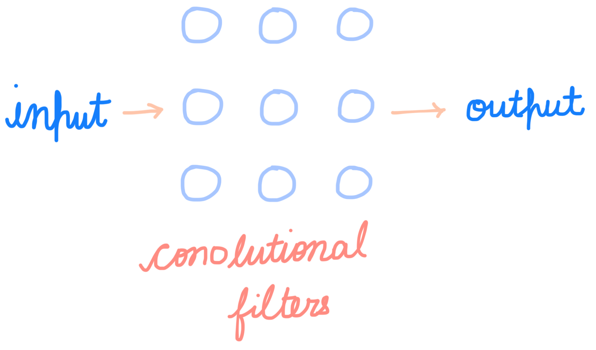

Computer Vision
A short explanation of CNNs( as much as I understand).
In computer vision, images are not pictures but numerical data. A computer sees an image as a grid of pixel values rather than objects or meaning. The challenge of computer vision is turning these numbers into recognizable patterns, a task commonly addressed using convolutional neural networks (CNNs).

When a computer is given an image of a tree, it does not recognize it as a tree in the human sense. Instead, the image is processed as a grid of pixel values, and convolutional filters respond to local patterns within that grid. Some filters may activate strongly for edges, others for textures resembling leaves or branching shapes, and others for color distributions such as areas of green. These responses are gradually combined across layers, forming higher-level representations that capture more complex visual structure. At the final stage, the model does not automatically output a binary answer; rather, it typically produces probabilities over possible classes. Interpreting the image as a “tree” is therefore the result of accumulated evidence across many features, with a binary decision being a choice made by the task design rather than an inherent property of how the model sees the image.